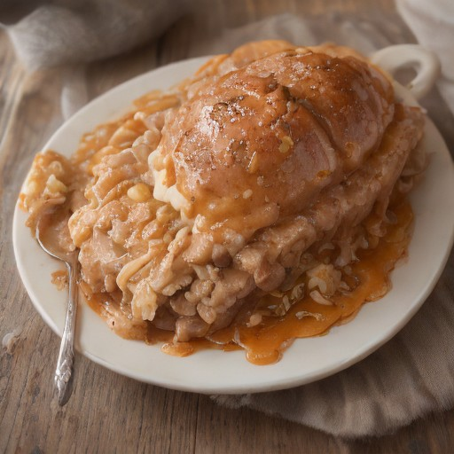

グラタン
ローストビーフ × 特製オニオンソース！悪魔的甘辛グラタン

悪魔的な甘辛な味わい、まるでロンドンで暮らす怪人たちが作った料理！ローストビーフと特製オニオンソースの組み合わせは、今まで味わったことのない美味しさ。
💡 こんな時・こんな人におすすめ！
クリスマスディナーや特別な日にもぴったり
📋 必要な材料（ポストイット風）
材料リスト 1
- ローストビーフ適量
- 特製オニオンソース適量
- 玉ねぎ1個
材料リスト 2
- パプリカ1個
- マッシュルーム1袋
- 牛乳100ml
🍳 作り方ステップ
1
1. ローストビーフは、玉ねぎとパプリカを飾り付けながら焼き、特製オニオンソースで味をつけます。
2
2. マッシュルームは薄切りにし、牛乳を加え、混ぜ合わせたバターで焼きます。
3
3. グラタン皿にローストビーフとマッシュルームを敷き詰めます。
4
4. 最後に、特製オニオンソースをたっぷりかけることで、悪魔的な甘辛な味わいを完成させます。